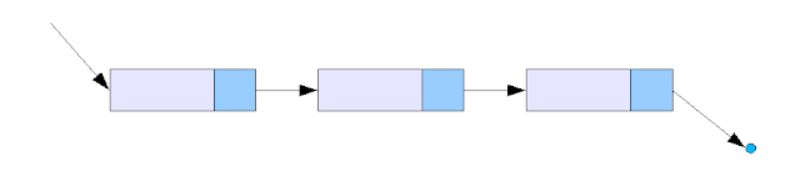
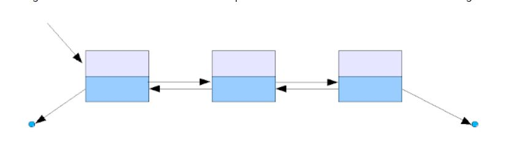

Linked list as the name suggests is a list of elements grouped linearly.
A unit element in a linked list consists of the following components:Data and Address of neighbour element. We refer to this unit element as a node. Therefore, a linked list is a set of nodes. The last node in the linked list points
to null, indicating that the linked list has ended.
Depending upon the number of nodes that are accessed directly, linked lists are further classified into:
Singly Linked ListHere,
the primary node contains the address of the next node. Imagine playing a game of treasure hunt. You know the first clue, which contains information to direct you to the second clue and so forth.
 Doubly Linked List
Here,
the primary node contains the address of the previous as well as the next node.Imagine travelling in a metro train. You know the first stop. The trains traverse back and forth according to its route.

Advantages of the Linked list:Easy to insert or delete an element. The size of the linked list is not fixed. The dynamic nature of linked list disables wastage of memory space.
Disadvantages of the Linked list: Searching
and sorting are costly because we cannot access elements randomly. Consumes more memory than an array to
store node.
Application of linked list:Implement stack, queue,
hash table and graph data structure. Storing polynomial numbers. Operating System uses a linked list when multiple applications are running. These applications are stored in nodes.Programs to play music, view images, go to
next web-page.